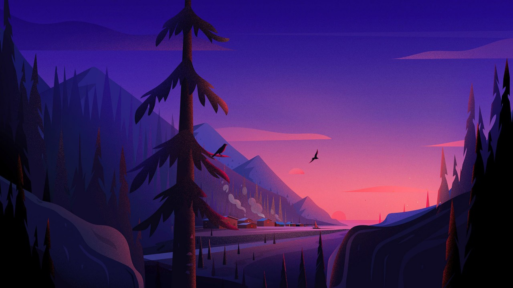

<!DOCTYPE html>
<html lang="en">

<head>
    <meta charset="UTF-8">
    <meta name="viewport" content="width=device-width, initial-scale=1.0">
    <title>Document</title>
    <style>
        /* #layer {
            position: relative;
        }

        #img {
            position: absolute;
            top: 0;
            left: 0;
        } */

        #layer {
            width: 100vw;
            /* height: 500px; */
            /* overflow: hidden;*/
        }

        #img {
            width: 100%;
            transition: transform 0.3s ease;
        }
    </style>
</head>

<body>
    <!-- <div id="layer">
        
    </div> -->


    <!-- <script>
        const img = document.getElementById('img');
        img.style.cursor = 'grab';

        //перемещение
        img.addEventListener('mousedown', (e) => {
            let shiftX = e.clientX - img.getBoundingClientRect().left;
            let shiftY = e.clientY - img.getBoundingClientRect().top;
            img.style.cursor = 'grabbing';

            document.onmousemove = function (e) {
                let left = e.pageX - shiftX + 'px';
                let top = e.pageY - shiftY + 'px';
                img.style.margin = `${top} 0 0 ${left}`;
            };

            img.onmouseup = function () {
                document.onmousemove = null;
                img.onmouseup = null;
                img.style.cursor = 'grab';
            };
        });


        //масштабирование
        img.onmousemove = function (e) {
            const x = e.pageX - this.offsetLeft;
            const y = e.pageY - this.offsetTop;

            const xPercent = x / this.offsetWidth * 100;
            const yPercent = y / this.offsetHeight * 100;

            img.style.transformOrigin = `${xPercent}% ${yPercent}%`; //для приближения точки под курсором
        };

        // img.onmousemove = null;

        let zoomLevel = 0.24;
        img.addEventListener('wheel', function (e) {
            e.preventDefault();
            if (e.deltaY < 0) {
                zoomLevel += 0.1
            } else if (e.deltaY > 0 && zoomLevel >= 0.2) { // ограничение, чтобы scale не уходил в минус
                zoomLevel -= 0.1;
            }
            img.style.transform = `scale(${zoomLevel})`;
        });


        //отключить собственный drag'n'drop браузера
        img.ondragstart = function () {
            return false;
        };

    </script> -->


    <div id="layer">
        
    </div>

    <script>
        const img = document.getElementById('img');
        img.style.cursor = 'grab';
        img.style.position = 'absolute';

        //перемещение
        img.addEventListener('mousedown', (e) => {
            let shiftX = e.clientX - img.offsetLeft;
            let shiftY = e.clientY - img.offsetTop;
            img.style.cursor = 'grabbing';


            document.onmousemove = function (e) {
                let left = e.clientX - shiftX + 'px';
                let top = e.clientY - shiftY + 'px';
                img.style.margin = `${top} 0 0 ${left}`;

                // const xPercent = shiftX / img.offsetWidth * 100;
                // const yPercent = shiftY / img.offsetHeight * 100;
                // img.style.transformOrigin = `${xPercent}% ${yPercent}%`; //для приближения точки под курсором
            };

            img.onmousemove = function (e) {
                const x = e.pageX - this.offsetLeft;
                const y = e.pageY - this.offsetTop;

                const xPercent = x / this.offsetWidth * 100;
                const yPercent = y / this.offsetHeight * 100;

                // img.style.transformOrigin = `${xPercent}% ${yPercent}%`; //для приближения точки под курсором
            }

            document.onmouseup = function () {
                document.onmousemove = null;
                document.onmouseup = null;
                img.style.cursor = 'grab';
            };
        });

        //отключить собственный drag'n'drop браузера
        img.ondragstart = function () {
            return false;
        };

        //масштабирование
        // img.addEventListener('mousemove', function(e) {
        //     e.preventDefault;
        //     const x = e.pageX - this.offsetLeft;
        //     const y = e.pageY - this.offsetTop;

        //     const xPercent = x / this.offsetWidth * 100;
        //     const yPercent = y / this.offsetHeight * 100;

        //     img.style.transformOrigin = `${xPercent}% ${yPercent}%`; //для приближения точки под курсором
        // });

        let zoomLevel = 0.24;
        img.addEventListener('wheel', function (e) {
            e.preventDefault();
            if (e.deltaY < 0) {
                zoomLevel += 0.1
            } else if (e.deltaY > 0 && zoomLevel >= 0.2) { // ограничение, чтобы scale не уходил в минус
                zoomLevel -= 0.1;
            }
            img.style.transform = `scale(${zoomLevel})`;
        });
    </script>
</body>

</html>